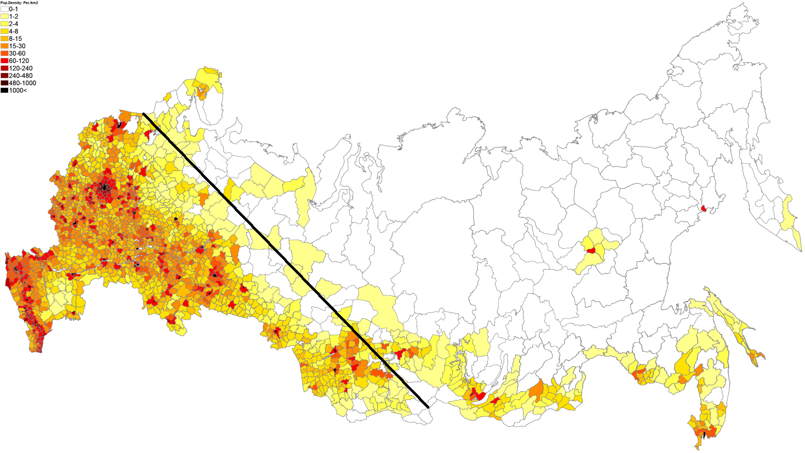

俄羅斯人口分界線
原文發表于方輿論壇，略有文字改動。原標題：﹃来画一条俄罗斯版黑河腾冲线：索尔塔瓦拉—萨雷格谢普线﹄。
西起卡累利阿共和國索爾塔瓦拉市，東至圖瓦共和國的一個叫﹃薩雷格謝普﹄的村級自治體。這條線東北，摩爾曼斯克相當於俄國的包頭，克拉斯諾亞爾斯克相當於俄國的蘭州，伊爾庫茨克相當於俄國的西寧，布拉戈維申斯克（海蘭泡）相當於俄國的烏魯木齊，符拉迪沃斯托克（符拉迪沃斯托克）相當於俄國的喀什，亞庫次克相當於俄國的拉薩。更東邊還有個馬加丹，大概算是俄國的日喀則。
有意思的是這條線和中國的黑河騰沖線幾乎是相互垂直的。
